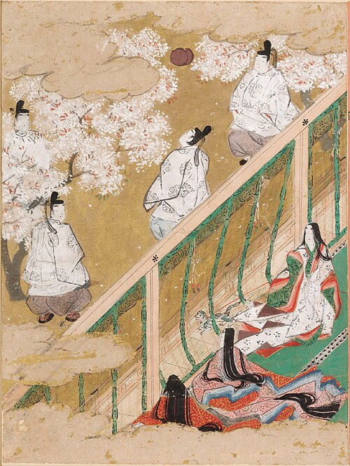

作品

専用ページ源氏物語を読む54帖のあらすじ、人物関係図、名場面、国宝絵巻などの絵、読み継がれ方、最新の研究まで。ページを開く →ジャンルを選ぶと、その作品だけを表示します。
年表
冒頭を読む
古典は、書き出しを知っているだけで、ぐっと身近になります。原文と、当サイトによる現代語訳を並べました。
くらべる
三大随筆
三大和歌集
成立年は通説による目安で、作品によっては幅があります。原文の引用は一般的な校訂本文により、現代語訳は当サイトによるものです。
古事記から源氏物語、平家物語、おくのほそ道まで。日本の古典14作品を、年表と冒頭の一文、くらべる表でたどります。源氏物語には専用の解説ページがあります。

専用ページ源氏物語を読む54帖のあらすじ、人物関係図、名場面、国宝絵巻などの絵、読み継がれ方、最新の研究まで。ページを開く →ジャンルを選ぶと、その作品だけを表示します。
古典は、書き出しを知っているだけで、ぐっと身近になります。原文と、当サイトによる現代語訳を並べました。
成立年は通説による目安で、作品によっては幅があります。原文の引用は一般的な校訂本文により、現代語訳は当サイトによるものです。